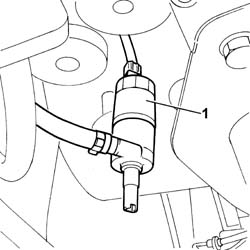
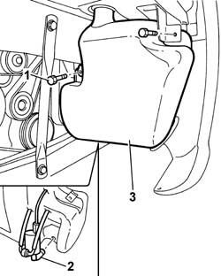

5050A10 WINDSCREEN WASHER FLUID RESERVOIR (IN ENGINE BAY) - R+R
- Path
- Procedures > 50 AUXILIARY UNITS > 5050 SCREEN WASHERS AND HEADLAMP WASH/WIPE > 5050A WINDSCREEN AND HEADLAMP WASHER RESERVOIR > 5050A10 WINDSCREEN WASHER FLUID RESERVOIR (IN ENGINE BAY) - R+R
- Kind
- repair procedure (removal / refitting; the operation number is the code)
- Applies to
- all engines; all production periods
- Interactive page
- https://sloeber94.github.io/elrnDB-fUlss/en/#/179007498
Applies to: all engines; all production periods
 Removing
Removing
 Refitting
Refitting- Position the vehicle on a lift.
Op. 5050A12 WINDSCREEN WASHER FLUID RESERVOIR FILLER PIPE (IN ENGINE COMPARTMENT) - R.R.
Op. 4450B04 RIGHT FRONT WHEEL R R
Op. 7055B91 RIGHT FRONT WHEEL ARCH LINER - R.R.
1. Release the headlamp washer pump taking care to collect any fluid that comes out.

Applies to: all engines; all production periods
1. Undo the fixing bolts and partly extract the screen washer fluid reservoir.
2. Release the screen washer pump taking care to collect any fluid that comes out.
- Remove the screen washer fluid reservoir.

Applies to: all engines; all production periods
Refitting
Removing- Position the screen washer pump on the screen washer fluid reservoir.
- Position the screen washer fluid reservoir and tighten the fixing bolts.
- Position the headlamp washer pump on the screen washer fluid reservoir.
Op. 7055B91 RIGHT FRONT WHEEL ARCH LINER - R.R.
Op. 4450B04 RIGHT FRONT WHEEL R R
Op. 5050A12 WINDSCREEN WASHER FLUID RESERVOIR FILLER PIPE (IN ENGINE COMPARTMENT) - R.R.
- Remove the vehicle from the lift.
- Top up the screen washer fluid level.
Topics linked from this page (3)
- 4450B04 RIGHT FRONT WHEEL R R
- 5050A12 WINDSCREEN WASHER FLUID RESERVOIR FILLER PIPE (IN ENGINE COMPARTMENT) - R.R.
- 7055B91 RIGHT FRONT WHEEL ARCH LINER - R.R.